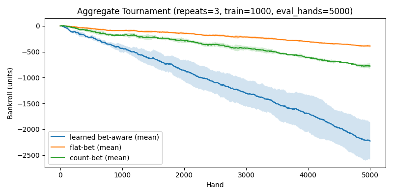

Project lead: lettucejuice04 | Assisted by GitHub Copilot (Raptor mini)
| Strategy | Final mean | Final std | Median |
|---|---|---|---|
| Learned bet-aware | -2226.67 | 357.68 | -2027.00 |
| Flat-bet baseline | -387.67 | 28.64 | - |
| Count-based ramp | -775.33 | 57.28 | - |
The plot below shows mean bankroll (with shaded ±1 std) across runs for each strategy.
Generated by a short automated report generator. For reproducibility, see scripts/tournament_aggregate.py and scripts/generate_report.py.